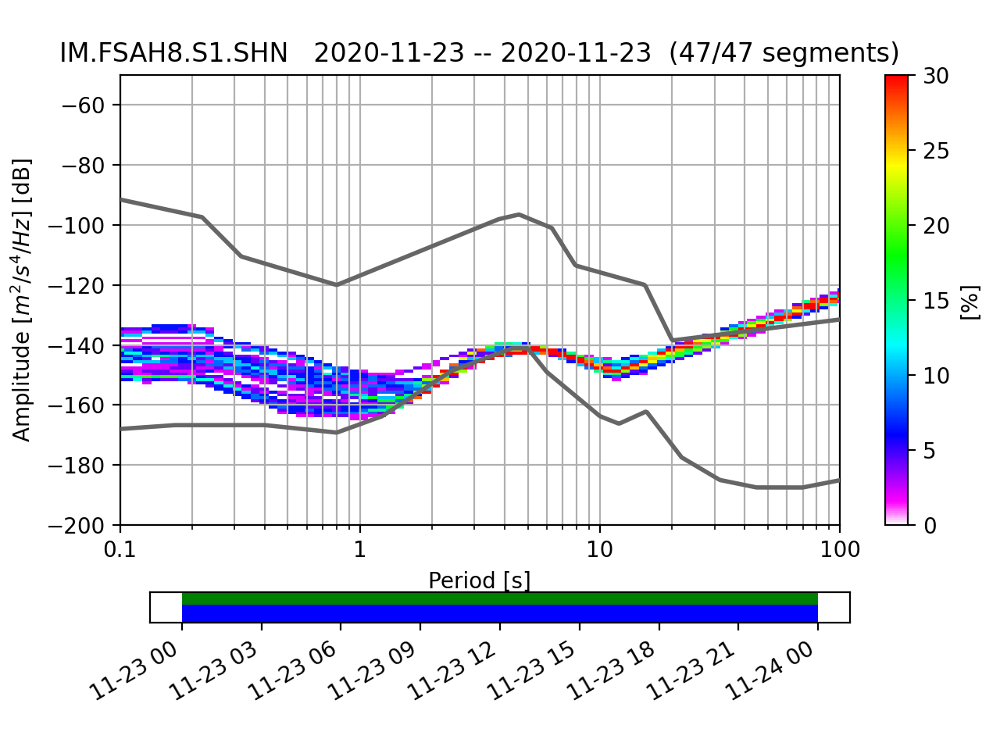
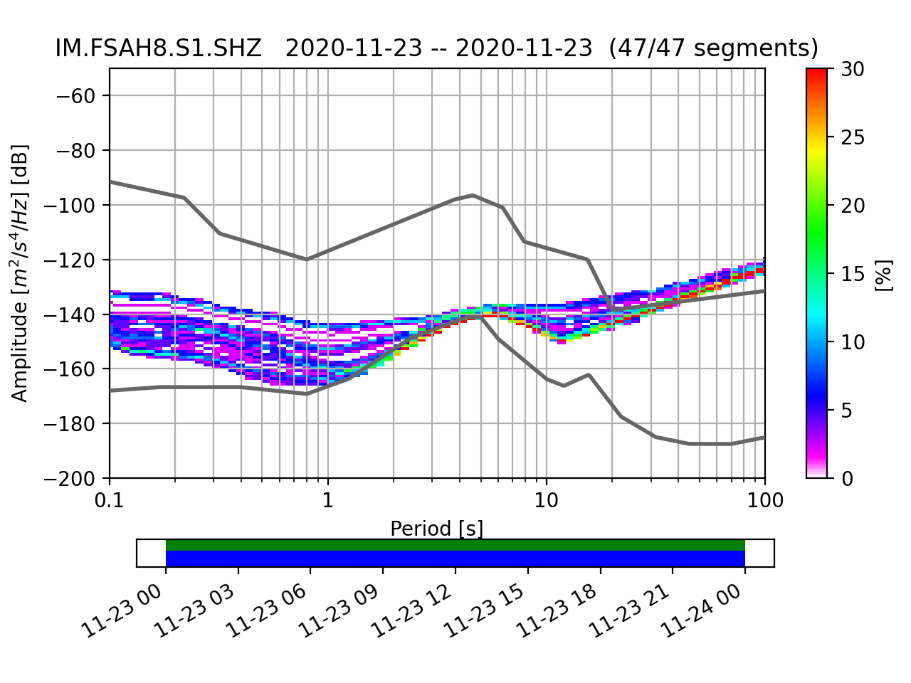
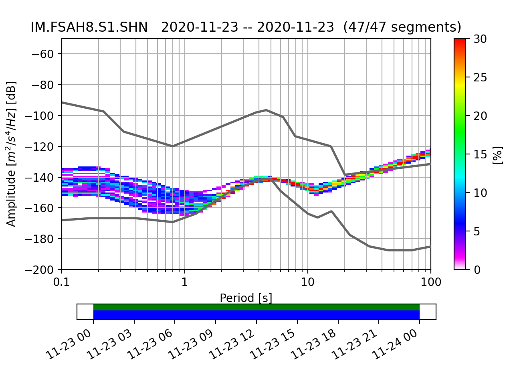
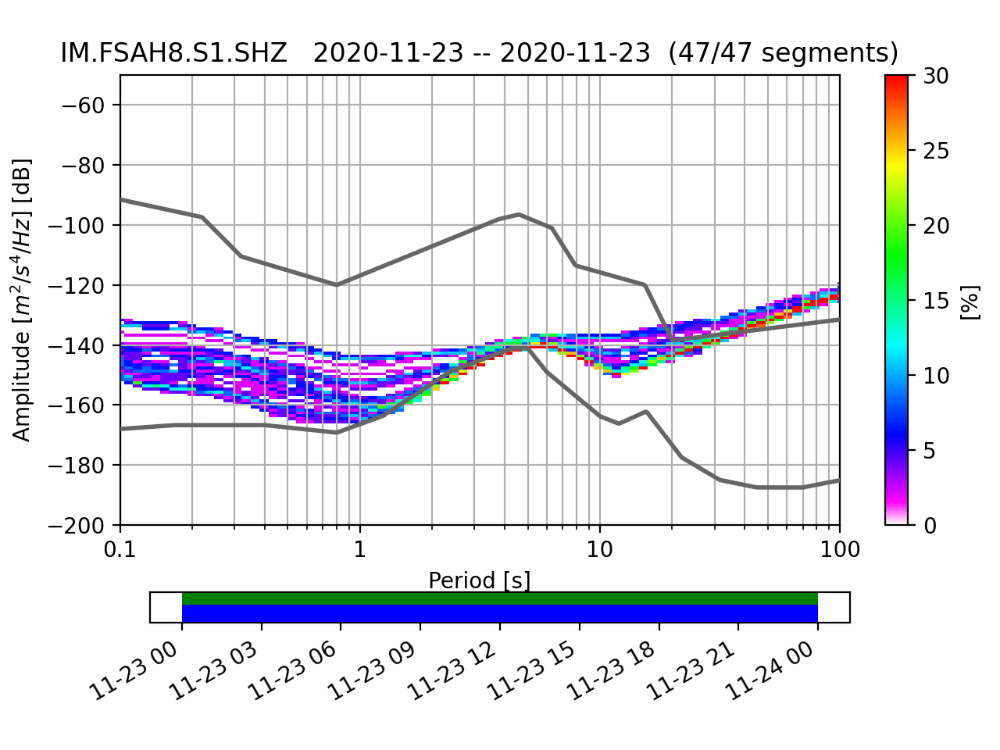

Clicking on each issue Summary link takes you to a more detailed description of that issue, including the metrics used to identify the problem. Sorted by category, then station.
WATC
| Category | Channel(s) | Status | Start Date | Summary |
| Amplitudes | IM.FSAH1.B1.BH? | In Progress | 2020-11-02 | Dead broadband sensor |
| Amplitudes | IM.FSAH2.I2.HDF | In Progress | 2020-11-30 | Dead sensor on the I2 element |
| Amplitudes | IM.FSAH2.M1.L?? | In Progress | 2020-11-08 | Malfunctioning weather station at FSAH2.M1 |
| Amplitudes | IM.FSAH4.I2.HDF | In Progress | 2020-11-30 | Dead Sensor |
| Amplitudes | IM.FSAH7.I[3,4].HDF | In Progress | 2020-11-27 | Transient Noise |
| Amplitudes | IM.FSAH8.B1.BH? | In Progress | 2020-11-02 | Dead broadband sensor |
| Amplitudes | IM.SHEM.-.BH? | In Progress | 2020-11-05 | Noise on Broadband |
| Completeness | AV.DLLH[1,2].-.HDF | In Progress | 2020-11-08 | Gaps and Outage |
| Completeness | IM.ADKI.[01-06].CDF | In Progress | 2020-11-11 | Gaps |
| Completeness | IM.I52C[1-7].-.BDF | Open | 2020-12-15 | Gaps |
| Completeness | IM.I53[H,C]7.-.?DF | Open | 2020-12-16 | Gaps |
| Completeness | US.ELK.00.BH? | In Progress | 2020-11-02 | Gaps |
| Metadata | IM.FSAH1.S1.SH[N,E] | Resolved | 2020-11-30 | Metada problem on shortperiod |
| Metadata | IM.FSAH2.B1.BH[N,E] | Resolved | 2020-11-30 | Metadata problem |
| Metadata | IM.FSAH5.B1.BH[N,E] | Resolved | 2020-11-23 | Undefined Azimuth and Dip |
| Metadata | IM.FSAH8.S1.SH? | In Progress | 2020-11-23 | Metadata problems |
| Metadata | IM.SJG.10.BH? | In Progress | 2020-11-30 | Metadata issue |
| Metadata | IU.GUMO.10.BH? | In Progress | 2020-11-02 | Elevated noise on broadband |
Detailed description of the issues. Sorted by station, with resolved issues at bottom
IM.I52C[1-7].-.BDF Gaps -- 2020-12-15
STATUS: Open
Thresholds:
avgGaps, gapsRatioGt12
(what is this?)
There were a large number of gaps at all C elements at I52 on 2020-12-15. This problem did not affect the H elements at I52.
IM.I53[H,C]7.-.?DF Gaps -- 2020-12-16
STATUS: Open
Thresholds:
(what is this?)
There were large numbers of gaps at the I53 H7 and C7 elements on 2020-12-16 and 2020-12-17.
AV DLLH[1,2] - HDF Gaps and Outage -- 2020-11-08 to
STATUS: In Progress
Thresholds:
avgGaps, gapsRatioGt12
(what is this?)
There were numerous gaps on elements 1 and 2 for the reporting period. Gaps and outages for elements 1 and 2 continued into this reporting period with large numbers of gaps occurring on 2020-12-16.
IM ADKI [01-06] CDF Gaps -- 2020-11-11 to
STATUS: In Progress
Thresholds:
avgGaps, gapsRatioGt12
(what is this?)
All elements of the ADKI array exhibit large numbers of gaps in the CDF channels for the entire reporting period. Daily number of gaps appear to spike on 2020-11-20 and 2020-11-21. These gaps continue, but metric generation for these channels will cease until they can by down-sampled.
Daily number of gaps for the ADKI.01 element. Pattern in similar for all elements.: Number of gaps affects percent_availability for all elements.:
Number of gaps affects percent_availability for all elements.: (Top)
(Top)
IM FSAH1 B1 BH? Dead broadband sensor -- 2020-11-02 to
STATUS: In Progress
Thresholds:
dead, lowAmp, flat
(what is this?)
All 3 channels of the broadband sensor at FSAH1 are not recording ground motions. We have approached Randy about this sensor but it is not resolved. This ticket remains open. I looked at bit more closely at this. Apparently, ground motions were recorded up until 2019-11-28, at which point there was an outage. The data returned on 2020-01-16, but only as digitizer noise. I have an email out to Randy to see if we can update out metadata with an end date of 2019-11-28 for this sensor.
 (Top)
(Top)
IM FSAH2 I2 HDF Dead sensor on the I2 element -- 2020-11-30 to
STATUS: In Progress
Thresholds:
(what is this?)
The I2 element appears to have a dead sensor. Problem appears to have started late on 2020-11-30. Added an image pinpointing time of problem onset.
IM FSAH2 M1 L?? Malfunctioning weather station at FSAH2.M1 -- 2020-11-08 to
STATUS: In Progress
Thresholds:
(what is this?)
Continued dead channels for the met sensor at this station.
 (Top)
(Top)
IM FSAH4 I2 HDF Dead Sensor -- 2020-11-30 to
STATUS: In Progress
Thresholds:
dead, lowRms
(what is this?)
The sensor at the I2 element died late on 2020-11-30 and remains dead through the end of the reporting period. Added a plot pinpointing the problem onset on 2020-11-30.
 (Top)
(Top)
IM FSAH7 I[3,4] HDF Transient Noise -- 2020-11-27 to
STATUS: In Progress
Thresholds:
hiAmp
(what is this?)
Elements 3 and 4 exceeded the hiamp threshold on 2020-11-27. This noise was apparent at other FSA sites and is most likely associated with a wind event. Continued transient noise on 2020-12-15 and 2020-12-20.
 Waveform showing transient noise at the I4 element:
Waveform showing transient noise at the I4 element: (Top)
(Top)
IM FSAH8 B1 BH? Dead broadband sensor -- 2020-11-02 to
STATUS: In Progress
Thresholds:
dead, flat
(what is this?)
Keeping this ticket open for a dead broadband sensor. Added the 'dead' threshold, based on the 'dead_channel_gsn' metric. Looked more closely at when this problem began. Looks like data went out around 2019-11-28T03:35:00 and came back as digitizer noise on 2020-01-16T01:30:00. I have an email out to Randy to see if this sensor should be closed in our metadata.
 (Top)
(Top)
IM FSAH8 S1 SH? Metadata problems -- 2020-11-23 to
STATUS: In Progress
Thresholds:
lowAmp
(what is this?)
The noise spectra for the 3-component short-period sensor at this site show significant mid-period energy below the noise model, indicating that there may be a problem with the response. Also, azimuth and dip are undefined for the vertical channel.
 

(Top)


(Top)
IM SHEM - BH? Noise on Broadband -- 2020-11-05 to
STATUS: In Progress
Thresholds:
hiAmp
(what is this?)
Re-opening this ticket as the 'hiAmp' threshold was exceeded on 2020-11-15. While there continues to be elevated mid-period noise, threshold exceedance usually seems to be associated with mass recenters. There has been once a week for the last 2 weeks. I'll keep this ticket open and keep an eye on the mrcs going forward. Re-opened this ticket as there have been continued mass recenters that exceeded the hiamp threshold. SHEM did not break the hiAmp threshold this reporting period. However, because it has exhibited consistent mass recenters, I will leave this ticket open for at least one more week.
IM SJG 10 BH? Metadata issue -- 2020-11-30 to
STATUS: In Progress
Thresholds:
badResp
(what is this?)
Metadata issue known from the start of this reporting period (but is seen in previous week).
 (Top)
(Top)
IU GUMO 10 BH? Elevated noise on broadband -- 2020-11-02 to
STATUS: In Progress
Thresholds:
badResp, hiAmp
(what is this?)
All 3 broadband channels exceeded the 'hiAmp' threshold. This issues has been corrected in our metadata inventory and will soon be installed. However, the ticket will remain open until the station passes thresholds. Metadata has been updated for the 2020-12-14 period. This has improved noise spectra, but noise remains elevated enough to still exceed thresholds. Ticket will remain open pending a discussion with the A-Team.
 Spectra computed with corrected WATC metadata:
Spectra computed with corrected WATC metadata: Spectra computed with IRIS metadata:
Spectra computed with IRIS metadata: (Top)
(Top)
US ELK 00 BH? Gaps -- 2020-11-02 to
STATUS: In Progress
Thresholds:
gapsRatioGt12
(what is this?)
All broadband channels at US.ELK exhibit high numbers of gaps for the entire reporting period. The same data from the IRIS FDSN do not exhibit gaps. There appears to be a communication error at some point. Gaps continuing through the current reporting period.
 Daily number of gaps on BHZ. Similar numbers for all components:
Daily number of gaps on BHZ. Similar numbers for all components: (Top)
(Top)
IM FSAH1 S1 SH[N,E] Metada problem on shortperiod -- 2020-11-30 to 2020-12-21
STATUS: Resolved
Thresholds:
horDip
(what is this?)
The orientation is undefined of the short-period seismometer. Metadata has been updated for this sensor.
IM FSAH2 B1 BH[N,E] Metadata problem -- 2020-11-30 to 2020-12-21
STATUS: Resolved
Thresholds:
horDip
(what is this?)
Orientation is undefined for broadband horizontal channels. Metadata has been updated for this station.
IM FSAH5 B1 BH[N,E] Undefined Azimuth and Dip -- 2020-11-23 to 2020-12-21
STATUS: Resolved
Thresholds:
horDip
(what is this?)
Both the azimuth and dip are undefined for the horizontal channels of the FSAH5 broadband. This metada has been updated.
 (Top)
(Top)
The links below take you to the metrics and other data quality tools used to identify the data issues in this report.
MUSTANG measurement service metrics:
| amplifier_saturation | |||
| asl_coherence | calibration_signal | clock_locked | cross_talk |
| data_latency | dc_offset | dead_channel_gsn | dead_channel_lin |
| digital_filter_charging | digitizer_clipping | event_begin | event_end |
| event_in_progress | feed_latency | glitches | gsn_timing |
| max_gap | max_overlap | max_range | max_stalta |
| metric_error | missing_padded_data | num_gaps | num_overlaps |
| num_spikes | pct_above_nhnm | pct_below_nlnm | percent_availability |
| polarity_check | pressure_effects | sample_max | sample_mean |
| sample_median | sample_min | sample_rate_channel | sample_rate_resp |
| sample_rms | sample_snr | sample_unique | spikes |
| suspect_time_tag | telemetry_sync_error | timing_correction | timing_quality |
| total_latency | transfer_function::gain_ratio | transfer_function::phase_diff | transfer_function::ms_coherence |
| ts_channel_continuity | ts_channel_up_time | ts_gap_length | ts_gap_length_total |
| ts_max_gap | ts_max_gap_total | ts_num_gaps | ts_num_gaps_total |
| ts_percent_availability | ts_percent_availability_total |
MUSTANG noise-mode-timeseries service
Thresholds used to identify potential data issues for this report were: